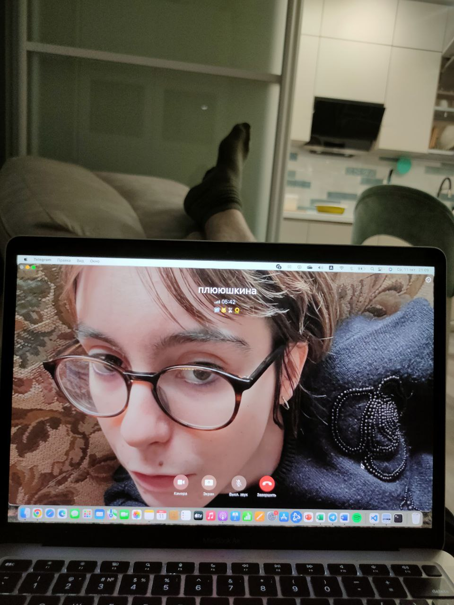
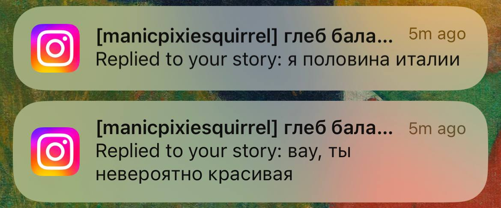

Плюсы и минусы общения с Дашей |
|
|
Плюсы |
Минусы |
|
Во-первых, прочитайте причины узнать о ней |
У вас может развиться зависимость и вам будет недостаточно одной Даши Плетюшкиной. Подумайте об этом заранее! |
|
Во-вторых, вы привыкните смотреть сериалы в оригинале (вас заставят) |
Из-за общения с ней вы начнёте крутить в голове все популярные сейчас тикток песни, даже если у вас нет тиктока. |
|
В третьих, вы попробуете весь ассортимент Самоката |
Вы попробуете весь ассортимент Самоката |
|
 В четвёртых, вы сможете видеть это при звонках (подставьте свои ноги) |
 Вам придётся регулярно видеть такие сообщения от её фанатов |
|
В любом случае, вы сможете сделать про неё сайт |
|
|
На одной из страниц которого сможете выполнить задание (вставить изображение на всю таблицу), которое не знали, где применить. Спасибо тебе за это! |
© Все фотографии и вся информация используются с устного согласия Плетюшкиной Д. А. |